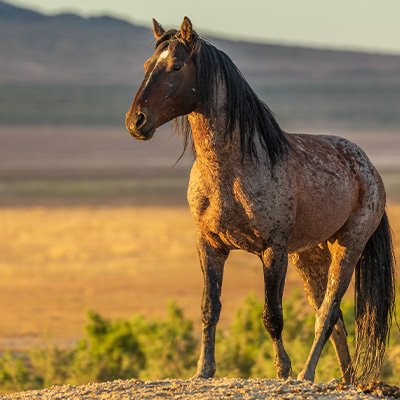

Russ is a blind deer.
He was brought to us by a hunter who found him
wandering in circles.Meet Nugget. He is learning how to climb trees and will
be released in a few more weeksThis is Ellie. She was
neglected by her owner and malnourished when she was
rescued.Say hi to Vinny. HIs back legs were injured,
making it difficult for him to get around.Rosie was just a baby When she arrived.
Now she has babies.Squirt is one of Rosie's babies

Muffin has come a long way.
She was very thin when she was rescued.Poor Harley was rescued
when he was just three weeks old. He is getting big and
will be released in about a month.Gizmo was abandoned by his owner and
is available for adoption.Peaches was also abandoned
by his owner. He loves to talk.Sonny was just a baby when
he was brought to us for rehabilitation.Poor Victor has "shell pyramiding," a form of bone disease.